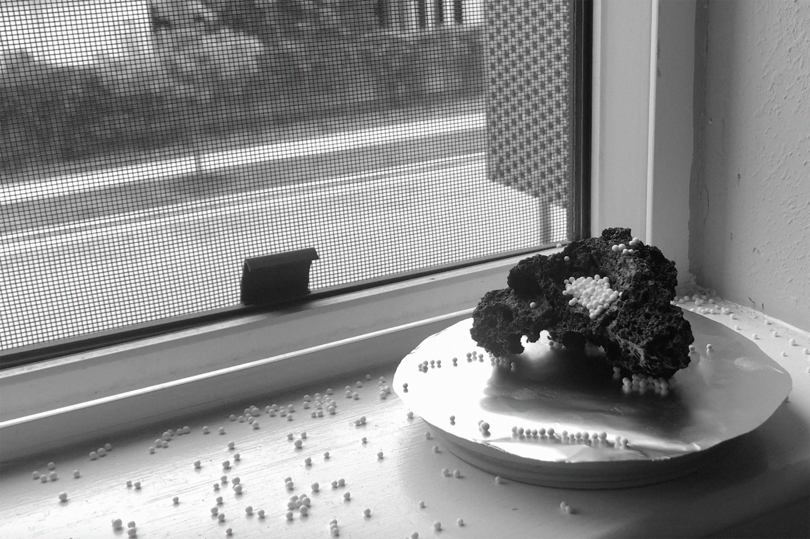
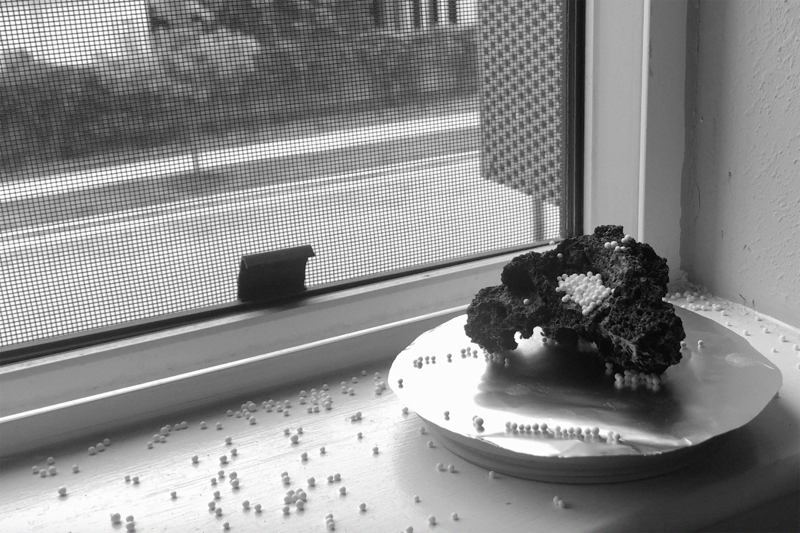

Chapter 3: Speculative & Critical Design / An Incomplete Glossary of Technological Interactions
Thesis Advisors: Richard The, Liza Stark, Anna Harsanyi
Additional Advisors: Anthony Dunne, Fiona Raby
This short film shows a series of speculative artifacts that reimagine the materiality of technological devices, focusing on tactility and care.
ARTIFACT 1: FELT SPEAKER
This is a soft and textural handheld speaker. I hand-felted and crafted this object. Traces of its construction are left visible: on the surface of the felt are faint seams and spots where different colors of wool fibers meet. It requires interactions such as piercing and winding to work. It’s meant to have a soft low sound, so you have to hold it up to your ear and listen closely.
ARTIFACT 2: WAX OBJECT
This artifact is made of colored wax and bits of metal. You can interact with it through melting, rotating, burning, tapping, pouring etc. While these interactions form technological connections, others such as carving and repositioning are acts of care that maintain this object. As the artifact is used, it melts, chips off, re-solidifies, shifting shape and position continually.

ARTIFACT 3: ROCK RECORDER
This artifact sits on a window sill in a home. When enough white spheres are pooled in the crevices of the rock, it records an audio archive of the sounds within the rock’s everyday environment. Alternately, a person could also speak directly to the rock to record their own voice. The connection can decay with the movement of the wind. So the spheres need to be swept and re-sprinkled again.
 

Making was used as a method to research, critique and design. The tactility of these technological interactions simultaneously also affords emotional connections with repeated contact.
The following images are of process work that led to the making of the artifacts and short film.

All photographs by Aliza Mahmood